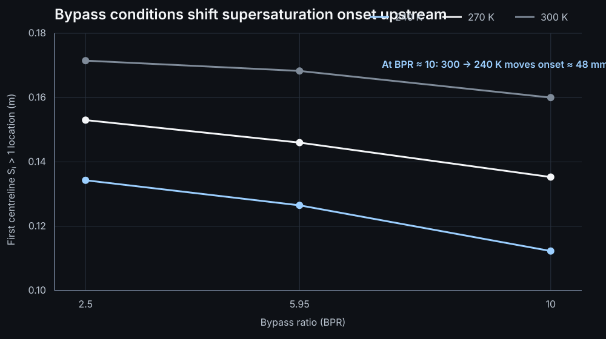
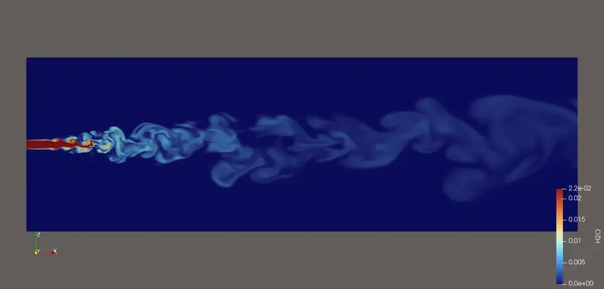
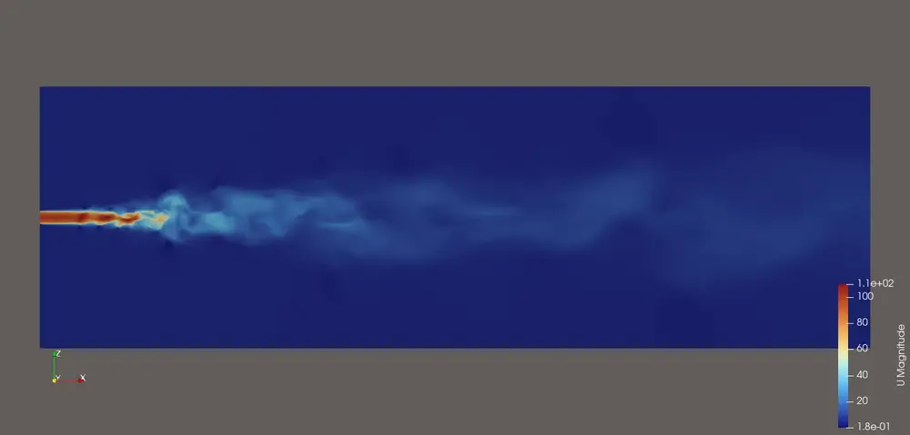

01 · Research context & ownership
From validated mean-flow models to fluctuation-resolved CFD
Contrail inception depends on the local combination of temperature and water vapour created by turbulent exhaust mixing. A Reynolds-averaged model can reproduce the mean plume, but it cannot directly provide the instantaneous fluctuation statistics that govern localized supersaturation. My work built the computational path from lower-cost validation to a three-dimensional LES capable of resolving those structures.
I worked under Professor Swetaprovo Chaudhuri in UTIAS's Propulsion & Energy Conversion Laboratory. The broader contrail project is a joint UTIAS effort involving Professor Clinton P. T. Groth's Computational Fluid Dynamics & Propulsion Laboratory and Professor Ömer L. Gülder's Combustion & Propulsion Laboratory, connecting experimental propulsion research with high-fidelity computational modelling.
02 · Experimental validation
Resolving a 40% modelling error before increasing fidelity
The first planar jet model systematically overpredicted downstream centreline temperature. I tested whether the discrepancy could be corrected through inlet turbulence specification, recalculating k and ω for different turbulence intensities and length scales. The error persisted at roughly 36–43%, indicating that the dominant problem was the planar geometry and its entrainment physics rather than a tunable inlet parameter.
I replaced the planar case with a five-degree axisymmetric wedge, introduced a developed core velocity profile, and progressed from rhoPimpleFoam to reactingFoam with chemistry disabled for compressible air–water-vapour transport. The final thermally validated case achieved a 1.42% mean absolute percentage error across six evaluated stations, with a 2.64% maximum error.
Engineering decision: rather than tune turbulence parameters to compensate for a geometry error, I changed the physical representation first and used the validated axisymmetric model as the basis for higher-fidelity development.
Water-vapour transport was checked for bounded mass fractions, mixture consistency, and physically sensible plume spreading. It was treated as numerically verified—not experimentally validated—because matching H₂O concentration measurements were unavailable.
03 · Turbofan-relevant bypass study
Separating the competing effects of plume cooling and vapour dilution
The validated axisymmetric model was extended to a multi-region inlet representing core → nozzle wall → annular bypass → nozzle wall → ambient. I ran a nine-case matrix spanning bypass ratios of approximately 2.50, 5.95, and 10.0, with bypass temperatures of 240, 270, and 300 K.
Lower bypass temperatures consistently cooled the plume faster and moved the first centreline location with Si > 1 upstream. Increasing bypass ratio produced the same qualitative shift while also increasing dilution of core-derived water vapour. At BPR ≈ 10, reducing bypass temperature from 300 K to 240 K moved the onset location from 0.1600 m to 0.1123 m—about 47.7 mm upstream.

| Bypass temperature | BPR ≈ 2.50 | BPR ≈ 5.95 | BPR ≈ 10.0 |
|---|---|---|---|
| 240 K | 0.1343 m | 0.1265 m | 0.1123 m |
| 270 K | 0.1530 m | 0.1460 m | 0.1353 m |
| 300 K | 0.1715 m | 0.1683 m | 0.1600 m |
This stage used a dry-ambient simplification and the lower-cost axisymmetric URANS model. The production 3D LES described below is the validated single-jet configuration, not the active-bypass geometry.
04 · Three-dimensional mesh & high-performance computing
Designing a 14.27-million-cell LES around the physics that needed resolution
A full three-dimensional domain was required to permit azimuthal instability and vortex breakdown. I wrote a Python-generated structured cylindrical O-grid and iterated the topology from lower-cost 3D RANS cases to the final 14,272,512-cell production mesh.
Instead of refining the entire tunnel uniformly, I used the developed SST-RANS field as a resolution guide. Local turbulence length scales and cell size were used to identify where the expanding core–ambient shear layer required the most LES resolution, concentrating cells in the region carrying the energetic turbulent structures.
Representative density-based LES settings: rhoCentralFoam, dynamicKEqn SGS closure, adaptive timestep, and Scotch decomposition on Trillium.
05 · LES solver engineering
Turning a numerical failure into a controlled diagnostic study
Pressure-based LES cases developed a travelling velocity–pressure runaway when strong velocity shear and thermal/density shear were present together. I tested mesh revisions, inlet regularization, convection schemes, and WALE, Smagorinsky, and dynamicKEqn subgrid models. Those changes altered the onset and growth rate, but none eliminated the failure in the tested pressure-based configurations.
Diagnostic conclusion: the controls strongly implicated pressure-based compressible coupling as an important contributor to the observed runaway under the tested conditions. The density-based configuration also changed energy and mixture treatment, so solver architecture was not claimed as the sole causal difference.
The stable path used rhoCentralFoam with a Kurganov central-upwind flux, van-Leer reconstruction, a transported dynamicKEqn subgrid-energy closure, and conservative passive-H₂O transport. This configuration provided enough stable physical time to move from solver development into late-time turbulence statistics.
06 · Late-time LES fields
Resolved turbulent structure across velocity, temperature, density, and water vapour
The passive-water-vapour LES was continued to approximately 54.5 ms after the RANS-to-LES transition. By the late state near t ≈ 0.0905 s, the original smooth RANS-initialized background plume was no longer readily identifiable as a separate feature; resolved turbulent structure had propagated through the plume.




These are instantaneous longitudinal centre-plane fields, not time averages. They are displayed at full content width here rather than in a compressed two-column gallery so the turbulent structure and colour scales remain legible.
07 · Time-resolved supersaturation statistics
Quantifying what deterministic RANS cannot provide
I post-processed 121 snapshots from the late 48–54 ms LES interval. Water-vapour mass fraction was converted to vapour partial pressure and then to the ice-saturation ratio Si using the Murphy–Koop saturation-pressure relation. The primary plume definition used a time-mean H₂O threshold of 5% of the core-inlet mass fraction; I repeated the analysis at 1% and 10% to test sensitivity. Spatial statistics used physical cell-volume weighting.

Same-mesh RANS vs LES
The RANS and LES water-vapour plume volumes differed by only about 5%, so the strongest difference was not bulk plume extent. It was the shape of the supersaturation distribution: LES produced a much stronger high-Si upper tail and added temporal intermittency that a deterministic RANS field cannot supply.
Interpretation: the median increased modestly, while P90 rose to roughly 2.4× the RANS value and P95 to roughly 3.2×. The resolved LES therefore changed the upper tail much more strongly than the centre of the distribution.
Scope of the current model
H₂O is transported as a one-way-coupled passive scalar and phase change is absent. The large absolute Si values therefore represent thermodynamic supersaturation potential, not a microphysically equilibrated contrail. The present 3D LES is the single-jet configuration; active bypass flow has so far been studied in the lower-cost axisymmetric model. Longer independent statistical windows and additional LES-resolution diagnostics remain appropriate next steps.
08 · Engineering takeaways